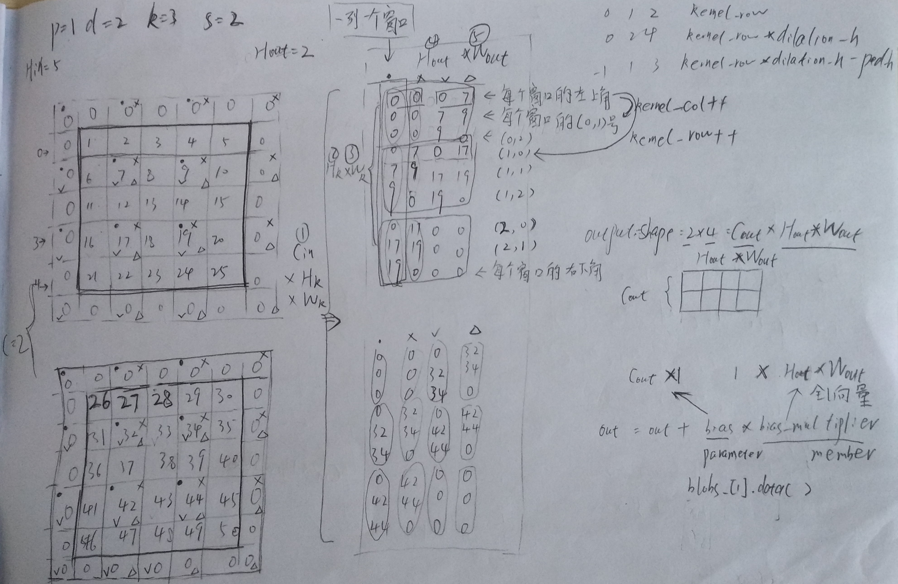

InnerProductLayer
| N_ | K_ | M_ |
| $N_{out}$ | $N_{in}$ | B |
\begin{equation}
\label{eq_pz_px}
z=f(\mathbb{Y}), \mathbb{Y}=\mathbb{A}\mathbb{X}+\mathbb{B} \rightarrow \frac{\partial{z}}{\partial\mathbb{X}}=\mathbb{A}^T\frac{\partial z}{\partial\mathbb{Y}}
\end{equation}
in eq \ref{eq_pz_px} we see
\begin{equation}
\label{eq_reverse_pz_px}
z=f(\mathbb{Y}), \mathbb{Y}=\mathbb{X}\mathbb{A}+\mathbb{B} \rightarrow \frac{\partial{z}}{\partial\mathbb{X}}=\frac{\partial z}{\partial\mathbb{Y}}\mathbb{A}^T
\end{equation}
in eq \ref{eq_reverse_pz_px} we see
InnerProductLayer forward
| item | - | NoTrans | NoTrans | NoTrans | Trans |
| code | top= | bias_multiplier_ | *blobs_[1] | +bottom | *weight |
| RAM | $B\times N_{out}$ | B | $N_{out}$ | $B\times N_{in}$ | $N_{out}\times N_{in}$ |
| math |
$\mathbb{Y}=$ |
$\vec{1}$ |
*$ {\vec{b}}^T$ |
+$\mathbb{I} $ |
$*\mathbb{W}^T$ |
| math size |
$B\times N_{out}$ |
$B\times 1$ |
$1\times N_{out}$ |
$B\times N_{in}$ |
$(N_{out}\times N_{in})^T$ |
$ \frac{ \partial e}{\partial (\mathbb{W}^T)}=\mathbb{I}^T\frac{\partial e}{\partial\mathbb{Y}} \rightarrow \frac{ \partial e}{\partial \mathbb{W}}=(\frac{\partial e}{\partial\mathbb{Y}})^T \mathbb{I} $
| item | - | Trans | NoTrans |
| code | blobs_[0]->mutable_cpu_diff() | top[0]->cpu-_diff() | bottom[0]->cpu_data() |
| RAM size | $N_{out}\times N_{in}$ | $B\times N_{out}$ | $B\times N_{in}$ |
| math | $\frac{\partial e}{\partial \mathbb{W}}= $ | $(\frac{\partial e}{\partial\mathbb{Y}})^T$ | *$\mathbb{I}$ |
| math size | $N_{out}\times N_{in}$ | $(B\times N_{out})^T$ | $B\times N_{in}$ |
$ \frac{ \partial e}{\partial (\vec{b}^T)}=\vec{1}^T\frac{\partial e}{\partial\mathbb{Y}} \rightarrow \frac{ \partial e}{\partial \vec{b}}=(\frac{\partial e}{\partial\mathbb{Y}})^T \vec{1} $
| item | - | Trans | NoTrans |
| code | blobs_[1]->mutable_cpu_diff() | top_diff | bias_multiplier_.cpu_data() |
| RAM size |
$N_{out}$ |
$B\times N_{out}$ |
$B\times 1$ |
| math |
$\frac{ \partial e}{\partial \vec{b}}= $ |
$(\frac{\partial e}{\partial\mathbb{Y}})^T$ |
$* \vec{1}$ |
| math size |
$N_out\times 1$ |
$(B\times N_{out})^T$ |
$B\times 1$ |
$ \frac{ \partial e}{\partial \mathbb{I}}=\frac{\partial e}{\partial\mathbb{Y}}{\mathbb{W}^T}^T= \frac{\partial e}{\partial\mathbb{Y}}\mathbb{W}$
| item | - | NoTrans | NoTrans |
| code | bottom->diff() | top_diff | blobs_[0] |
| RAM size | $B\times N_{in}$ | $B\times N_{out}$ | $N_{out}\times N_{in}$ |
| math | $\frac{\partial e}{\partial \mathbb{I}}= $ | $\frac{\partial e}{\partial\mathbb{Y}}$ | *$\mathbb{W}$ |
| math size | $B\times N_{in}$ | $B\times N_{out}$ | $N_{out}\times N_{in}$ |
ConvolutionLayer
Forward_cpu
Forward_cpu的核心在于把input转换成column matrix.
Forward_cpu中，无法像InnerProductLayer一样一次对NxCxHxW的输入全部处理,只能一次处理CxHxW的数据。
因此需要处理N次。 对应的代码是
for (int n = 0; n < this->num_; ++n) {// num_ = batchSize
this->forward_cpu_gemm(bottom_data + n * this->bottom_dim_, weight,
top_data + n * this->top_dim_);
if (this->bias_term_) {
const Dtype* bias = this->blobs_[1]->cpu_data();
this->forward_cpu_bias(top_data + n * this->top_dim_, bias);
}
}
假设卷积核大小为2x2x3x3，即：
conv_im2col_cpu对im2col_cpu进行封装，下面展示了一个例子，把2x5x5的的特征图进行转换，在pad=1, dilation=2, kernel=3, stride=2的情况下，
得到18x4的矩阵（下面把转换后的矩阵称为列化矩阵）。
列化矩阵的形状的通式：$C_{in}*H_k*W_k \times H_{out}*W_{out}$。
我们可以把列化矩阵当作$C_{in}$个子列化矩阵，每个子列化矩阵代表由一个原始输入通道得到的。
子列化矩阵的同一列来自一个滑动窗口，子列化矩阵的同一行代表了所有窗口具有相同$x$、$y$索引的位置得到的元素。
即子列化矩阵第0行与卷核的第(0,0)个元素相乘，
即子列化矩阵第1行与卷核的第(0,1)个元素相乘，
即子列化矩阵第2行与卷核的第(0,2)个元素相乘，...，
即子列化矩阵第$H_k*W_k-1$行与卷核的第(H_k-1, W_k-1)个元素相乘，

ConvolutionLayer forward
| - |
- |
gemm |
gemm |
| item | - | NoTrans | NoTrans | NoTrans | NoTrans |
| math |
$\mathbb{Y}$ |
$\mathbb{W}$ |
*$\mathbb{I}$ |
+$\vec{b}$ |
*${\vec{1}}^T$ |
| math size |
$C_{out}\times H_{out}*W_{out}$ |
$C_{out}\times C_{in}*H_k*W_k$ |
$C_{in}*H_k*W_k\times H_{out}*W_{out}$ |
$C_{out}\times 1$ |
$1\times H_{out}*W_{out}$ |
| RAM size |
$C_{out}\times H_{out}*W_{out}$ |
$C_{out}\times C_{in}*H_k*W_k$ |
$C_{in}*H_k*W_k\times H_{out}*W_{out}$ |
$C_{out}$ |
$H_{out}*W_{out}$ |
| code |
top= |
weight |
*col_buff |
+bias |
*bias_multiplier_ |
Backward_cpu
首先对b求偏导。
BaseConvolutionLayer<Dtype>::backward_cpu_bias:
$\frac{ \partial e}{\partial \vec{b}} = \frac{\partial e}{\partial\mathbb{Y}} {{\vec{1}}^T}^T
= \frac{\partial e}{\partial\mathbb{Y}} \vec{1}
$
| - |
- |
gemv $\beta=1$表明e对b的梯度需要累加，累加次数等于batchSize |
| item | - | NoTrans | - |
| math |
$\frac{ \partial e}{\partial \vec{b}} =$ |
$\frac{\partial e}{\partial\mathbb{Y}} $ |
$\vec{1}$ |
| math size |
$C_{out}\times 1$ |
$C_{out}\times H_{out}*W_{out}$ |
$H_{out}*W_{out}\times 1$ |
| code |
bias_diff |
top_diff |
bias_multiplier_ |
| RAM size |
$C_{out}$ |
$C_{out}\times H_{out}*W_{out}$ |
$H_{out}*W_{out}$ |
BaseConvolutionLayer<Dtype>::weight_cpu_gemm:
$ \frac{\partial e}{\partial \mathbb{W}} = \frac{\partial e}{\partial \mathbb{Y}} {\mathbb{I}}^T $. 会调用im2col_cpu, 生成的col_buff被backward_cpu_gemm重复利用。
| - |
- |
gemm. $\beta=1$表明e对W的梯度需要累加，累加次数等于batchSize |
| item | - | NoTrans | Trans |
| math |
$\frac{\partial e}{\partial \mathbb{W}} =$ |
$\frac{\partial e}{\partial \mathbb{Y}}$ |
${\mathbb{I}}^T$ |
| math size |
$C_{out}\times C_{in}*H_k*W_k$ |
$C_{out}\times H_{out}*W_{out}$ |
$H_{out}*W_{out} \times C_{in}*H_k*W_k$ |
| code |
weight_diff |
top_diff |
col_buff |
| RAM size |
$C_{out}\times C_{int}*H_k*W_k$ |
$C_{out}\times H_{out}*W_{out}$ |
$C_{in}*H_k*W_k \times H_{out}*W_{out} $ |
BaseConvolutionLayer<Dtype>::backward_cpu_gemm
$ \frac{\partial e}{\partial \mathbb{I}} = {\mathbb{W}}^T \frac{\partial e}{\partial \mathbb{Y}}$。
把e对col_buff的梯度转换成 e对真正输入的梯度: 调用col2im_cpu，im2col_cpu的反向变换
注意：caffe的col2im_cpu并不是严格的im2col_cpu的逆变换，因为col2im_cpu执行的累加:data_im[input_row * width + input_col] += *data_col;
因此，col2im_cpu仅适用于回传梯度，不是严格意义的col2im。
caffe的col2im_cpu，如果原始矩阵某个元素在im2col_cpu过程中被放在列化矩阵多个位置，假设在列化矩阵中M个位置出现，则col2im_cpu过程中会把这个值累加M次，很明显，严格意义上的col2im应该仅出现一次，不过对于回传梯度，出现M次是正确的。
当然，caffe中调用col2im_cpu的函数都只用它来回传梯度，比如BaseConvolutionLayer<Dtype>::backward_cpu_gemm用它求误差e对bottom的偏导。 没有在前向代码中见过调用col2im_cpu的地方。
原始矩阵中某个元素在列化矩阵中多次出现的例子(中间的元素)
| - |
- |
gemm 无累加:$\beta=0$ |
| item | - | Trans | NoTrans |
| math |
(这是e对col_buff的梯度)$\frac{\partial e}{\partial \mathbb{I}} =$ |
${\mathbb{W}}^T$ |
$\frac{\partial e}{\partial \mathbb{Y}}$ |
| math size |
$C_{in}*H_k*W_k \times H_{out}*W_{out}$ |
$C_{in}*H_k*W_k \times C_{out}$ |
$C_{out} \times H_{out}*W_{out}$ |
| code |
bottom_diff |
weight |
top_diff |
| RAM size |
$C_{in}*H_k*W_k \times H_{out}*W_{out}$ |
$ C_{out} \times C_{in}*H_k*W_k $ |
$C_{out} \times H_{out}*W_{out}$ |
{kind=link}